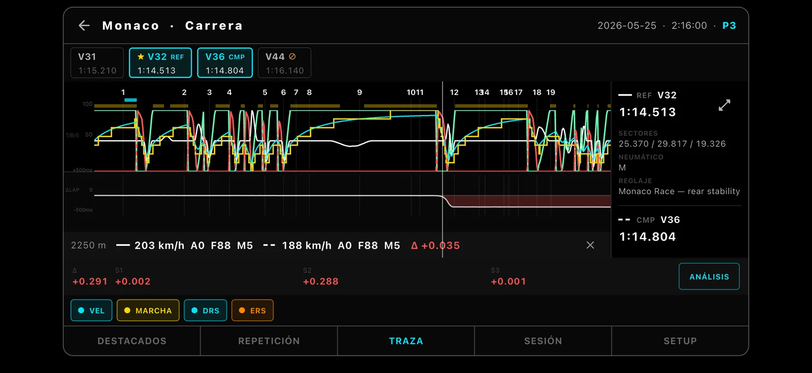

Gratis
- La traza en vivo a pantalla completa del panel
- La TRAZA del historial para tu sesión más reciente
Cómo funciona
Elige vueltas, compara una referencia con otra vuelta, haz zoom, desplázate y pasa a pantalla completa, en vivo en el muro de boxes o después en el historial.
Las dos vistas comparten el mismo gráfico, los mismos gestos y las mismas fichas de vuelta: lo que aprendes en una sirve en la otra.

Las vueltas de entrada y salida de boxes y una última vuelta sin terminar aparecen en la lista, marcadas como parciales, pero nunca se ofrecen como referencia ni como comparación.
Los botones bajo el gráfico (SPEED, GEAR, DRS, ERS) muestran u ocultan esas líneas. Un canal que el juego no envió no se dibuja, y su botón indica que no se registró.
El panel junto al gráfico muestra el tiempo, los sectores, el neumático y el reglaje de la vuelta de referencia, y el tiempo de la vuelta comparada. Con el teléfono en vertical, esos datos pasan a una franja sobre el gráfico.
Toca el botón de ampliar en la esquina superior derecha del gráfico. La traza llena la pantalla con su leyenda y sus controles; en iPhone prefiere la orientación horizontal. Toca el botón de cerrar para volver exactamente donde estabas.
En las sesiones de F1 26 que registraron la aerodinámica activa o la energía ERS, la TRAZA del historial añade una fila ENERGÍA Y RITMO. Abre hasta cuatro hallazgos de tus vueltas comparables, cada uno con qué pasó, por qué importa y qué probar después.